Notes on Shear Layer Control
2018-04-14
1 Free Shear Layers: jets
Let us begin by looking at the structure of a subsonic jet issuing from a carefully-designed nozzle into the atmosphere.
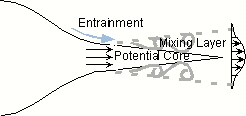
The potential core is where the velocity is still pretty much the exit velocity.
In the mixing layer, there is a shear, which results in “vorticity”.
\[ \xi = 2 \omega = \nabla \times \vec{u} \]
Obviously, the potential core is considered to be a region where there is no vorticity. In regions where there is shear, there is vorticity. This can be seen by expanding the cross-product definition above:
\[ \xi = \Big ( \frac{\partial w}{\partial y} - \frac{\partial v}{\partial z} \Big ) \vec{i} + \Big ( \frac{\partial u}{\partial z} - \frac{\partial z}{\partial x} \Big ) \vec{j} + \Big ( \frac{\partial v}{\partial x} - \frac{\partial u}{\partial y} \vec{k} \Big ) \]
where there are gradients of velocity perpendicular to the velocity direction, there is shear. The mixing layer thickness is approximately 0.2x to 0.25x, where x is the distance downstream of the nozzle exit.
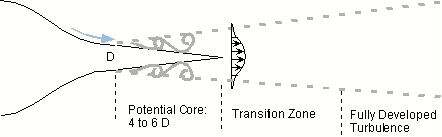
A plot of the velocity component parallel to the axis, along the axis, would look as follows. In the potential core, the velocity can chance if the external pressure changes, as for example, for a jet inside a duct of changing cross-section. Otherwise, there would be no change inside the potential core. Beyond the potential core, the jet slows down through mixing and momentum exchange with the outside flow: the influence of the jet spreads outwards, while the influence of the outside is felt at the axis.
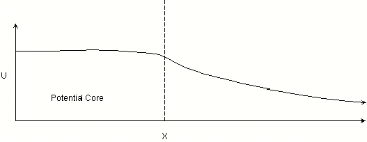
1.1 Why does mixing between streams occur when there is shear?
Due to instabilities of the shear layer, some disturbances will amplify and form vortical structures, where the shear layer “rolls up”: the inner portion being composed of fluid moving faster than the outer portions. These vortical structures merge and form large coherent structures, which are big enough to go far out into each stream. Thus, fluid which originated in each stream gets “transported” far out into the other stream. This is called “convective transport”, to distinguish it from the much slower process of molecular diffusion across boundaries. When convective transport occur, large “packets” of fluid, containing zillions of molecules, get flung far out into each stream from the other.
Now these large-scale structures achieve transport, but this is not enough to complete the mixing. Inside the large-scale structures, there are rolled-up shear layers. These again form smaller vortical structures, and so on down to much smaller scales. Thus, many levels of shear layers occur. At the smallest levels, there are tiny vortical structures, with relatively large contact area between fluid that originated in the two streams. At these levels, thorough mixing is occurring: the two fluids are getting to be indistinguishable. Thus, the transport is achieved through the large-scale coherent structures, but the mixing actually occurs through the fine-scale structures.
As the Reynolds number increases, the variety of size scales increases, and probably the smallest scales get smaller, so mixing is promoted.
The concept of mixing and transport can be applied not only to chemical composition (“species transport”), but also to mass and momentum. The thickening of a boundary layer is due to “momentum transport: think of it as the outer lanes of traffic slowing down because the inner lanes are slowing down. A fast car from the outer lane zipping into the inner, slow-moving lane, is”mass transport”.
1.2 Control of Jets
Velocity components can be written as the sum of the time-averaged (or mean), the random fluctuation about the mean, and the fluctuation due to coherent structures (which are not quite random).
\[ u = \bar{u} + u^{\prime} + \tilde{u} \]
If we are able to control the jet, we should be able to change the length of the potential core, and the extent of the mixing layer.
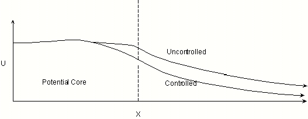
2 Supersonic vs. Subsonic Jets
Shown below is an underexpanded supersonic jet, coming out of a convergent-divergent nozzle. As the jet comes out of the exit, it expands because the outside pressure is less than the nozzle exit pressure. The flow at the edge turns, sending out Prandtl-Meyer expansion waves. Beyond this, the “slip line” bordering the jet flow is a line across which the velocity changes sharply, but the static pressure is the same. This “slip line” is where the shear layer develops. At the axis (or plane of symmetry if its a 2-D planar jet), more P-M expansions go outward as the flow expands further. When these expansion waves reach the outer boundary, the pressure becomes lower than the outside, forcing the flow to turn back in so that the pressure stays unchanged across the slip line. This inward turn and pressure rise occurs across an oblique shock. This process continues until a normal shock occurs and the flow becomes completely subsonic, spreads out and slows down.
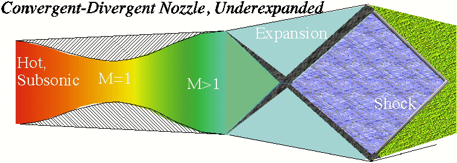
Supersonic jets contain shocks and expansions. We all know that in supersonic flow, information cannot propagate upstream, so what you do downstream cannot affect what happens upstream. But note that the mixing layer contains subsonic flow. So here, information can go back upstream! This causes phenomena which can be explained using “feedback”. It also opens up opportunities for controlling such jets. Now lets look closely at the shear layer.
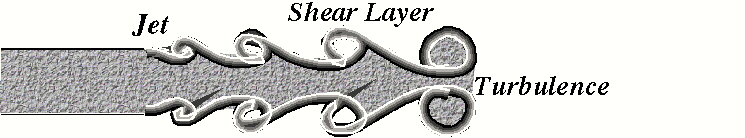
2.1 Instability Wave
A disturbance which amplifies in a shear layer can be described as an instability wave. If you monitor velocity fluctuations at a few fixed points in space, what you see will be a change in velocity which moves downstream. This similar to having 3 police cars stationed at different point along the Interstate: each feels a pressure wave and a gust of wind as something red flashes by, the ones further down the road feel this a few seconds after the ones stationed up the road. On the other hand, if you change your coordinates to a system which moves at the speed of the convecting structures, you will see what appears to be a vortex: something going round and round. Thus, the police car which moves at the speed of the red flash sees a Corvette, whose shape remains constant in time. In the case of fluid structures, note that the structures move at a speed different from that of the fluid itself: thus its never the same fluid molecules that are spinning around inside the coherent structure. Instead, fluid goes in and out of the structure continuously. This is very important to remember when one looks at, for example, smoke flow visualization of vortices: the smoke moves at a speed different from that of the vortex. Now you see why we refer to these structures as “waves”: they are disturbances propagating like waves through the fluid. We can associate a “wavelength”, “wavenumber” “frequency” etc. with these structures.
These structures are also referred to as “Kelvin-Helmholtz instability”. Consider what happens when the jet is axisymmetric: these structures would extend all round the jet. So they can be considered to be like: “Vortex Rings”, similar to what we see when someone is trying to impress everyone by blowing smoke rings. Smoke rings are vortical structures developing in the shear layer of a suddenly-accelerated jet flow, and they remain somewhat stable because the jet continues to accelerate upwards due to buoyancy, so there is continuous shear.
Wave number: Tell us about changes with distance.
\[ a = 2p / l = \omega / c \]
where \(c\) is propagation speed of the wave (or structure). \(l\) is wavelength. \(\omega\) is \(2pf\) , and \(f\) is frequency (per unit time, cycles per second).
Wavelength changes due to vortex pairing, among other things.
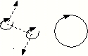
3 Frequency-domain concepts
Many things which look hopelessly complicated in the time domain can be expressed with beautiful simplicity in the frequency domain. To see this, consider the problem of describing something which goes up and down, in a sinusoidal fashion, several times a second. Once we recognize that it does repeat itself periodically, it becomes simple to describe it. We describe it by one frequency, the amplitude, and maybe a phase reference. These are fixed.
Extending this, we can try to describe complicated-looking variations as sums of several simple periodic functions, with different amplitudes. We can describe these as a series of terms, involving sine and cosine functions of a fundamental frequency and its multiples. This is the concept of a Fourier Series. A few assumptions are implicit here. One is that “linear superposition is valid”.
We will see that operations involving “convolution integrals” can be reduced to simple multiplication (of complex numbers) in the frequency domain. There are several such concepts, which help us visualize relations between variables.
3.1 “Spectrum” (plural: spectra)
Refers to the distribution of the energy of fluctuations as a function of frequency.
3.1.1 Example: Autospectrum of velocity
The autospectrum is really the “auto-spectral density function, integrated over finite intervals of frequency”. Its units are “velocity-squared per interval of frequency”. In other words, it is a measure of fluctuation energy (per unit mass) of the property which is being described: the velocity. The word “auto” refers to the fact that it is a spectral density function obtained as the product of the property with itself, i.e,, velocity times velocity. In contrast, there can be “cross-spectral density functions”, for example, the product of velocity with pressure, or pressure with density, etc.
Consider a velocity measurement at a point, as a function of time.
This variation can be supposed to be built up of various sine and cosine waves, of different frequencies and amplitudes. This is the idea of a Fourier Series. Conversely, we can “sample” this variation for some time, and then break it up into the various frequencies, and compute the amplitudes at each frequency. This is done by taking the “Fourier Transform” of the sample of the signal. If we do this a number of times, and average the result, it will probably all cancel out, because we have no control about the phase of the sines and cosine waves as we begin each sample. That is, some samples will have velocity going up while other will have velocity going down, at the same parts of the sample. Instead, however, if we square the fluctuation, we can avoid this problem. We can find the average “energy” (i.e., something proportional to the square of the amplitude) in each frequency interval. This is the process of constructing a spectrum. Below we see how these “spectra” are used to discover the various interesting features buried in what looks like a random fluctuating flow.
3.1.2 Example of a Periodic or Narrow-Band fluctuation occurring in a turbulent flow
The spectrum shows a sharp peak in a narrow band of frequencies: this means that there is something varying almost like a sine wave (nearly constant frequency).
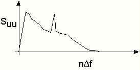
Below, we see a spectrum where there are several frequencies of instability waves seen: the fundamental and several harmonics.
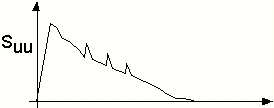
Below is the broad-band spectrum of turbulent flow: there is energy at every frequency, because there just so many different kinds of fluctuations occurring.
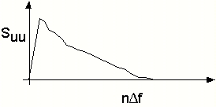
4 Spatial Instability
A spatial instability is a disturbance which grows as it goes downstream. Below is shown a jet, in which instabilities grow as they go downstream, eventually resulting in total turbulence. If you place a hot-film probe in the shear layer just outside the potential core, you might see the narrow-band peaks of the instability waves, superposed on the turbulent spectrum. If your sensor is shifted downstream, you will see that the frequency of this instability wave has decreased, while the amplitude has increased. Out in the fully-turbulent zone, it will be hard to distinguish any spectral peak on top of the broad-band turbulence.
5 Excitation of coherent structures
Control or excitation of a shear layer can be described using the frequency, amplitude and “receptivity”. Receptivity refers to how a flow “receives” the excitation. This concept applies to flows over airfoils (wall-bounded shear layers) as well as flows coming out of jet nozzles (free shear layers). The figures below show speakers blasting out sound at carefully selected frequencies, right close to the points of maximum receptivity. In the case of the jet exit, the receptivity is maximum in the immediate vicinity of the exit edge. In the case of an airfoil, its harder to decide such a point: if the flow is at the point of separating from the surface and forming a free shear layer, then receptivity would be maximum at the beginning of the shear layer.

Receptivity is usually highest at the jet exit plane edge. Excitation frequency for a jet is a function of the size of the shear layer, which is proportional to the jet diameter. Strouhal number \(fD/U\) is around \(0.3\) to \(0.5\) for jets, and \(0.42\) to \(0.48\) for laminar jets.
6 Screech Tones in Supersonic Jets
“Screech”, as the word implies, is a loud, high-pitched whistling sound from underexpanded jets. It is accompanied by severe pressure fluctuations, which can cause structural fatigue on aircraft components, not to mention ear drums and nerves of neighbors. In the past, it has been found that the afterburner duct of jet engines also resonated sometimes with the screech tone, and this would result in rapid destruction of the engine. Engine manufacturers have reported in the early 1980s that of every 20 or so engines built, 1 or 2 would exhibit this phenomenon: explanations were not easily obvious. A curious aspect of the screech instability, inside afterburner ducts, was that it greatly increased the heat release rate inside the afterburner: somehow the fuel was burning much more quickly and efficiently. So, while the engine was unable to withstand this high rate of heat transfer, it appeared that some good might be derived from such oscillations, in the long run.
Schematic sketches of the occurence of screech and its suppression. Above, the mechanism of screech is shown: instability waves in the shear layer interact with shocks, sending pressure pulses which are able to reach upstream through the shear layer and other subsonic regions. The pressure wave reaching the nozzle lip triggers new instability waves, amplifying the phenomenon. Below, the introduction of a baffle around the jet inhibits upstream propagation of the pressure wave, de-coupling the lip region from the shock interaction region. 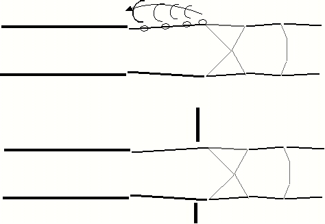
Here we are interested in how the screech occurs in the jet outside the nozzle exit, and how it can be cured. Note that the jet is supersonic: no information can propagate upstream, so how can there be any feedback? The answer is that the flow is not supersonic everywhere in the shear layer, or outside the jet. As we saw in the Cavity Flow case, there is a forward propagation path, and a feedback path, and these are in different portions of the flow. The forward propagation of disturbances is through the generation of vortical structures (amplified instability waves) in the shear layer. These move at (you can guess!), about 0.65 times the jet flow velocity. When the vortical structure hits a shock, there is a large pressure disturbance. It is debatable whether this is due to fluctuation of the shock, or distortion of the vortical structure, or both. At any rate, the pressure disturbances propagate as sound waves. They can move upstream through the subsonic part of the shear layer, and through the outside flow (assuming that the outside flow is not supersonic too). When these pressure fluctuations reach the nozzle lip (edge of the nozzle exit), they “excite” the shear layer, and trigger the rollup of new structures, which sail off downstream again. This completes the loop.
Strouhal numbers for screech tones, based on jet exit diameter and exit velocity, are approximately, 0.25, 0.5, 1.0 etc. Example: If a jet exit diameter is 0.6 meters, and the exit velocity is 1000 m/s, the expected frequencies are, approximately, 417, 834, 1668 Hz, etc. We cannot predict beforehand which of these is going to be most amplified.
Given that the shear layer is the route for feedback, we can see how these fluctuations might even creep upstream through the boundary layer, or the engine liner, into the duct region, and resonate with resonant modes in the afterburner duct. In practice, the reverse process may be more likely. Resonant modes of the afterburner duct may be excited, and send out fluctuations in mass flow and velocity field structure, through the nozzle exit: these may then lock into one of the preferred modes of the shear layer /shock interaction loop. At first sight, there is a choked nozzle between the afterburner duct and the exhaust jet, so no fluctuations are supposed to escape. But remember that (a) fluctuations can indeed pass through if the temperature upstream fluctuates, since the choked mass flow rate is a function of upstream total temperature and the total pressure, and (b) the boundary layer is subsonic, even in a choked nozzle.
6.1 Screech Suppression
Some surprisingly simple techniques work. One is to put a baffle around the periphery of the jet. This inhibits the feedback path of the sound, and thus breaks the resonance loop. For round jets, it is possible to break the symmetry of the vortex rings by placing a probe or other asymmetric disturbance at the edge of the shear layer. For example, in our lab experiment, we found that a pencil introduced into the shear layer would stop the screech tone. Of course this might have been because the jet was at a relatively low Reynolds number, and the turbulence level is very low, so that we had a high level of clean symmetry. This may not be the case in a jet engine exhaust. On the other hand, Dr. Ahuja’s team at GTRI has shown that placing small tabs into the shear layer at the nozzle exit can reduce screech tones greatly.
This goes back to the issue of “receptivity”: even small disturbances can cause major changes to the instability waves, if introduced at the region of highest receptivity: the nozzle lip.
6.2 Convection Speed of Instability Waves or Large Eddies
Considering that the convective speed is about 0.65 times the jet exit velocity, the convective Mach number can be greater than 1. That is, the vortical structures zip by, at the edge of the shear layer, like little supersonic aircraft, and hence must generate their own “sonic booms”, or propagating shock waves. These make the supersonic jet very noisy indeed. The noise can be reduced greatly if the convective Mach number is brought below 1.0.
7 Source
Copied from GATECH courses and following link. I made this copy because the original site has so many broken links and I’m afraid that this webpage will someday be lost.